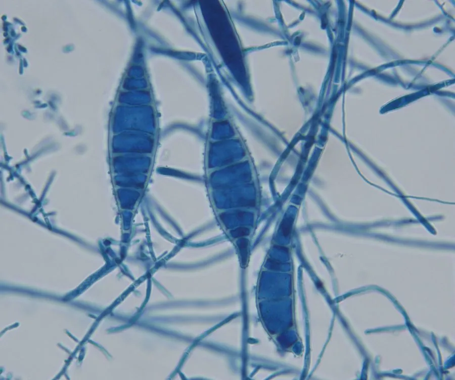

真菌 · 真菌界
犬小孢子菌 Microsporum canis

皮肤癣菌，菌落白色絮状、背面橙黄，主要寄生于猫狗皮毛，可通过接触传染给人引起体癣与头癣等。
- 分类
- 门子囊菌门纲散囊菌纲目散囊菌目科分节癣菌科属小孢子菌属
- 栖息环境
- 猫、狗等动物的皮肤与毛发，以及被皮屑污染的环境
- 地理分布
- 世界性分布，城市养宠家庭与流浪动物中常见
- 保护级别
- 暂无评估；作为人畜共患病原广泛存在
物种志
犬小孢子菌的菌落生长较快，表面白色至淡黄、棉絮状，背面呈橙黄至金黄色，是重要的鉴定特征。镜下可见纺锤形、壁厚、具横隔的大分生孢子，以及少量小分生孢子，菌丝有隔。它分泌角质酶，能分解皮肤与毛发的角蛋白。
犬小孢子菌是猫、狗等动物皮肤癣的主要病原，也是人畜共患癣病的常见来源。人接触患病宠物后，可在手臂、躯干或头皮形成环形红斑、脱屑、断发，儿童头癣尤为常见。它在环境中可借脱落毛发与皮屑存活数月，通过共用梳子、毛巾、沙发传播。防治需同时治疗宠物与人，保持环境清洁干燥，避免与患病动物密切接触；确诊需真菌镜检或培养，不可自行乱用激素药膏。
形态与习性
- 菌落白色棉絮状，背面橙黄至金黄色
- 镜检纺锤形厚壁大分生孢子，具横隔
- 宿主猫、狗等动物皮毛，可传染给人
- 所致疾病体癣、头癣，儿童头癣常见
- 传播接触患病动物或污染毛发、梳子
- 防治宠物与人同时治疗，环境清洁干燥
趣味知识
- 犬小孢子菌的菌落背面呈金黄色，这是它在培养皿里最容易认出的特征。
- 它主要寄生在猫狗身上，人接触患病宠物后会长出环形癣斑，属于人畜共患病。
- 脱落的带菌毛发在沙发、地毯上可存活数月，是家庭内反复感染的源头。
- 儿童头癣常由它引起，表现为断发、脱屑，需口服抗真菌药规范治疗。